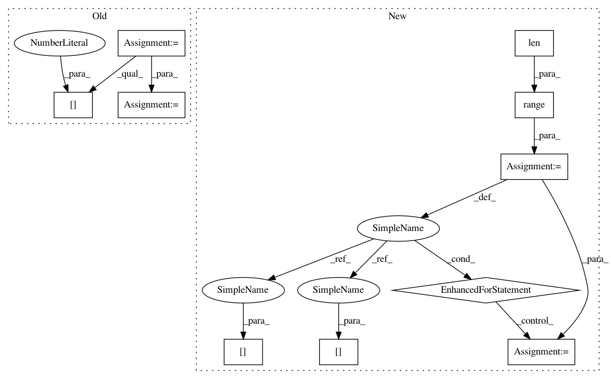

45d63060d155077f97e3cb42cf7551ec03af987c,gpytorch/kernels/grid_interpolation_kernel.py,GridInterpolationKernel,initialize_interpolation_grid,#GridInterpolationKernel#Any#Any#,14
Before Change
grid_size = grid_size
grid = torch.linspace(grid_bounds[0], grid_bounds[1], grid_size - 2)
grid_diff = grid[1] - grid[0]
self.grid_size = grid_size
self.grid_bounds = grid_bounds
After Change
self.grid_size = grid_size
self.grid_bounds = grid_bounds
self.grid = torch.zeros(len(grid_bounds), grid_size)
for i in range(len(grid_bounds)):
grid_diff = (grid_bounds[i][1] - grid_bounds[i][0]) / (grid_size - 2)
self.grid[i] = torch.linspace(grid_bounds[i][0] - grid_diff,
grid_bounds[i][1] + grid_diff,
grid_size)
self.grid = Variable(self.grid)
return self
def forward(self, x1, x2, **kwargs):
In pattern: SUPERPATTERN
Frequency: 3
Non-data size: 10
Instances
Project Name: cornellius-gp/gpytorch
Commit Name: 45d63060d155077f97e3cb42cf7551ec03af987c
Time: 2017-08-29
Author: ruihan.wu14@gmail.com
File Name: gpytorch/kernels/grid_interpolation_kernel.py
Class Name: GridInterpolationKernel
Method Name: initialize_interpolation_grid
Project Name: cornellius-gp/gpytorch
Commit Name: 45d63060d155077f97e3cb42cf7551ec03af987c
Time: 2017-08-29
Author: ruihan.wu14@gmail.com
File Name: gpytorch/kernels/grid_interpolation_kernel.py
Class Name: GridInterpolationKernel
Method Name: initialize_interpolation_grid
Project Name: kubeflow/kubeflow
Commit Name: d5caf230ff50260c1a6565db35edeeddd5d407e6
Time: 2018-02-08
Author: mitake.hitoshi@gmail.com
File Name: build/boilerplate/boilerplate.py
Class Name:
Method Name: get_refs
Project Name: kevinzakka/recurrent-visual-attention
Commit Name: 520e8fb57b890a7249334d9e90c9ad209d0b849f
Time: 2018-02-10
Author: kevinarmandzakka@gmail.com
File Name: modules.py
Class Name: retina
Method Name: foveate